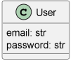
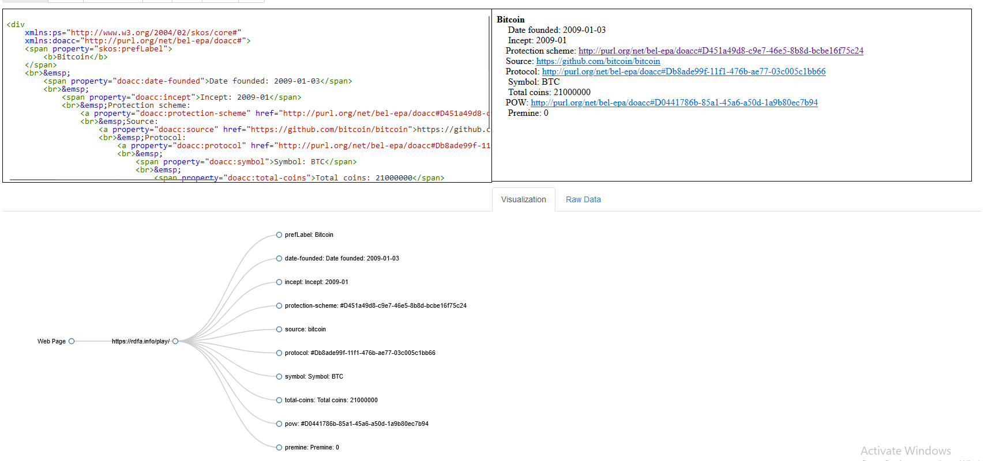
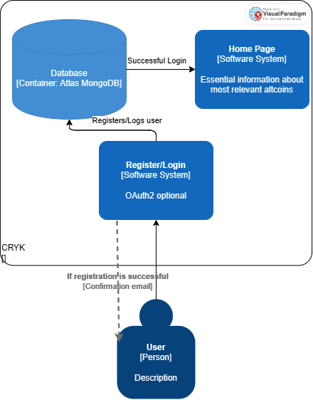

- Authors
-
JumpyBugs
(Elisabeta Constatin
&
Cosmin-Gabriel Cruceanu
&
Theodor Samson)
- License
-
CC-BY
Abstract
This report describes the solution created by the JumpyBugs team for CryK, a WADE project. The report contains details describing the architecture of the application, technologies used for backend and frontend development, alongside a short description for its diagrams.
Introduction
Cryptocurrencies are incresingly popular alternatives for online payment since they enable secure online payments without
the use of third-party intermediaries. But before converting traditional currencies into
cryptocurrencies the users should search for information regarding the currency wanted.
CryK (Cryptocurrency Knowledge Manager) is a micro-service-based web application capable to show
and manage information regarding cryptocurrencies (e.g. name, trading symbol, total coins, block target time,
hashing algorithm, date launched, URL of the source code repository, URL to the official page).
This catalogue of coins will use semantic web technology. This approach takes advantage of the attendant power and
flexibility of representation in order to improve ease of re-use. The Web Ontology Language (OWL) will be used in this project
in order to define a structure of knowledge for our main domain and more.
Project progress
This project exceeded its initial goals and accomplished more than what was originally intended. Initially, the project was designed as a simple altcoin viewer that could produce data visualizations while fulfilling the requirements.
The requirements were:
- Manage the knowledge about existing cryptocurrencies and their (meta-)data.
- Implement micro-services
- Implement a SPARQL endpoint
- Exposed information available in at least HTML+RDFa and JSON-LD
However, by the deadline, after completing the above mentioned goals, the team was also able to incorporate a secure user management system that allows users to track their favorite coins and monitor their performance.
In addition, the project also features a functional SPARQL endpoint that enables users to navigate the web application's vocabulary. Even more, a basic recommandation model has been introduced, which gives hints to the user whether
he should buy or not in the near future a cryptocurrency. This is a clear testament to the project's success in going beyond its initial purpose and delivering a comprehensive solution to users.
Technologies
Our project is a web application which provides interactive services that can be accessed by web browsers.
Frontend
The front end representing our catalogue of coins is built using Angular.
Backend
The back end includes CryKAPI and CryKSemanticAPI, both written in Python using, and deployed using Flask:
-
CryKAPI utilises multiple services (CryKDatabase, CoinGECKOService and MLService). CryKDatabase utilises pymongo to ensure communication with the chosen database provider. The communication is done using JSON format for both calls and responses, moreover the responses from the MongoDB are transformed into specific models that can be easily converted into JSONs.
CoinGECKOService was used to further filter the coins which are exposed via the endpoints for SemanticAPI, but its main purpose it is to provide real-time data for specific coins (which are still alive), and to also provide historic data (up to 5 days). We chose to use CoinGECKO because its API is free-to-use, however we are still limited in regards to how many calls we can perform per minute.
CryK also offers a prediction via its MLService whether someone should invest into a specific coin (DISCLAIMER: do not invest using our model's predictions).
- CryKSemanticAPI utilises Ontology Query Service which uses the library rdflib in order to work with RDF and SPARQL queries. CryK handles queries on the DOACC dataset via the query system provided by rdflib or on the JSON-LD via its known properties. The JSON-LD was obtained by converting the DOACC dataset which was provided in the N-Tiples format. JSON-LD provided easier acces and better control over the dataset.
Data
Data structures
In order to manage the data within our project, we have made use of 4 models which are aligned to the project's needs and will be illustrated down below:

The Cryptocurrency class will be used with the data received from DOACC in order to populate the fields for each cryptocurrency available in our project.
The Portfolio class is used to keep track of a user's coin portfolio, including the different types of coins they own and the number of each type.
The Profile class can be used to store and manage information about a user's personal profile, including their contact information, location, and personal details. This information can be used by other classes or applications to personalize the user experience and provide relevant content.
The User class is used in registration and login processes, where a user is required to provide their email address and password to create an account or access their existing account. The email and password combination is verified against a database to ensure the user is authorized to access the system.
All of the above classes can be easily exported to JSON format.
External data
The integration of the DOACC data and CoinGecko API has enabled us to deliver a powerful and informative system for users interested in the cryptocurrency market.
This information includes the symbol of the altcoin, its current price, and an illustration of the coin. To make this information more accessible and easier to work with, we have transformed the N-Triples received from
the DOACC into JSON-LD. This transformation has increased the data flexibility within our system and allows us to easily access and manipulate the information as needed.
CoinGecko
CoinGecko is a cryptocurrency data platform that provides real-time market data, charts, and insights for over 8,000 cryptocurrencies. By reaching out to CoinGecko's API, we can access up-to-date information about the price
of different cryptocurrencies. This integration helps us provide valuable insights and information to our users about the cryptocurrency market. With the use of CoinGecko's API, we enhance the functionality of the project and
make it more informative for our users.
DOACC data
The DOACC is a database of information regarding altcoins, which are cryptocurrencies other than Bitcoin. This database includes facts such as the name, trading symbol, total number of coins, target time for blocks, hashing algorithm used, date of launch, and URL for the source code repository.
We have integrated in our project the dataset that they provide, which is in n-triple format, in order to offer various information about the altcoins that are also available in the CoinGecko API.
Architecture
The project consists of various components, including an Angular-based frontend and a node.js server, as well as a Python-based backend utilizing Flask. The backend features two APIs - one for SPARQL queries and another for managing
user accounts, coins, and other related data. These services are designed as micro-services, running concurrently on separate ports and managing data from various sources. User-specific information is stored on MongoDB Atlas for availability and manageability,
while information about altcoins is stored within the server in for reduced latency.
General diagram
The application follows a very simple architecture, from a frontend client, the actions done by the user call different endpoints in 2 APIs, one with a more general purpose, and the other one, a semantic API that that utilises a wrapper for SPARQL that has a queries ready to be used on our onthology obtained from DOACC.

Cryptocurrency buying recommender
The model was created using the SequentialModel from Tensorflow. The model features the following layers:
- The first layer adds a new axis to the input that will be used to obtain the predictions;
- The second layer creates a convolutional kernel with the input layer over the spatial dimension to produce a tensor with the given dimensions (in our case 128 filters) and a kernel of size 5x5;
- The third layer creates a fully dense layer in order to take into account all the values produced by the previous layer and "classify" them into 128 classes;
- The last layer does the same thing as the previous one, but it produces 2 values that correspond to the predicted values for the input coin for the next 2 days
We trained 3 such models, each based on the historical prices of different cryptocurrencies (ETH, BTC and DOGE). Based on the output of each model, the percetage obtained after calling the model produces a percentage that indicates the confidence that the model has whether the coin would raise or not in price. As we said previously, this does not mean that the coin will actually grow in price, and users should not invest based on that percentage.
In the image above, the blue dots represent the real progress through which Dogecoin went through, and with orange dots we have the predicted values for Dogecoin for the next half a year.
The model above has a loss of 0.0590.
Ontology
The choice of the ontology language to utilize in a particular situation must be made before beginning to create an ontology-based system. For our project, we have used the Ontology Web Language (OWL) format for modeling our data, which was acquired through the DOACC project and these files came in the above mentioned extension. The tool used to display the ontologies and extract some metrics and previews was Protege, a free, open-source ontology editor.
The dataset that we gathered was converted through a custom script from the n-triples format to json-ld to ease access and readability.
DOACC
The DOACC ontology model is described as in the following illustrations:
- The complete graph:
- The arc relations between entities:
- The prefixes:
- The most relevant metrics of the vocabulary:
- The data managed by our system (in terms of the cryptocurrency information handled) comes first of all from the properties of the DOACC ontology:
Knowledge usage
The knowledge model utilized in our project is derived from the DOACC project and stored in N-TRIPLES format. This data was deemed comprehensive enough for our purposes and covered all the information necessary for us to build upon it.
To make the data more readable and manageable, we converted it from N-TRIPLES to json-ld, which also met the requirements of the project. The json-ld data includes details such as the protocol used by the altcoin, its preferred label, website, and more.
However, some coins lacked complete information, so we had to be flexible in our data retrieval and parsing process. In addition to the DOACC project, we also made use of other knowledge bases such as SKOS and DC to retrieve descriptions
and preferred labels of the coins.
Our semantic API provides various endpoints that allow us to retrieve specific data based on our needs, such as getting coins based on their protocol (PoW or PoS), retrieving a filtered list of coins based on their name, or getting the image associated with
a single coin. All this information is integrated into our web application and can be accessed through the Cryptocurrencies tab. To make data more accessible, we also expose a sparql endpoint which can be used
within the project through the Sparql tab. Below, a brief example of a request and response for an endpoint call:
Valid html + RDFa generation:  Valid jsonLD generation:
APIs
JumpyBugs implemented the APIs using Flask, due to its simplicity in launching a very simple server, capable of accepting multiple requests of different methods (POST, GET), accessing the request's data, handling user cookies, and having an easy way in which responses can be send back as JSON.
CryKSemanticAPI
This API handles requests for obtaining information about cryptocurrencies from the JSON-LD file converted from the DOACC dataset. The API calls the Ontology Wrapper that has methods for obtaining all the cryptocurrencies or filtered based on the name or protocol. The cryptocurrencies are firstly filtered by the coins which CoinGECKO can actually handle, and then via the filters required by the request. The API offers the information in different formats, JSON, JSON-LD or HTML-RDFa, all of which were validated using online tools.
As an example, let's see how the following route works:
The route takes as parameter in which format the response should be returned in (JSON-LD or HTML RDFa), and the takes the coin names from the request body, and performs the query on the JSON-LD from DOACC. A sample response for that endpoint is the following, as validated for JSON-LD:
CryK API
The CryK API works as a multi-purpose API handling user login, user portfolio and user profile. The API also handles the images for the cryptocurrencies, keeping our frontend lightweight. Most of the routes are protected using the token obtain from Google OAuth or by the user's id, one of which must be present as a header for the request. The responses are much simpler for this API, as it returns JSONs.
Use cases
Cryptocurrencies have been designed to address a variety of issues prevalent across multiple industries. These digital assets can be used in several ways, including:
- Trading
- Online Payments
- Exchange
Our project is focused on providing support to users with their digital assets. One of our key objectives is to enable users to effectively track and manage their digital assets. Additionally, our project also aims to educate and guide users
towards making informed decisions in the cryptocurrency market. We strive to provide the necessary tools and information to help users identify the best opportunities and make the most of their investments in the cryptocurrency space.
Task flows
Login/Register
In order for the user to gain full access to our web application, it is mandatory to create an account first. This can be achieved through either OAuth2 with google, or with our custom login/register. Our authentication service is designed to enhance
security by implementing a secure method for storing and validating user credentials. The process involves the use of a combination of a hash and salt on the password to generate a unique and encrypted representation of the password. This ensures that
even if the password is compromised, the attacker would not be able to obtain the actual password, thus providing an extra layer of security to the user's account. Upon successful login, the user's session is maintained either through a JWT
(if the option chosen is OAuth2) or via a session ID cookie.

General
The following actions are available for the user:
- Updating their personal profile.
- Managing their wallet to monitor portfolio performance.
- Accessing cryptocurrency information, such as price, symbol, and protocol.
- Performing SPARQL queries on available RDF data.
- Visualizing the comparative performance of altcoins in various formats.
- See how the most important coins fare and a quick price prediction for the cryptocurrencies
Visualizations of Data
“Data visualization is expert storytelling” (Murray, 2013). CryK exists for a better way of showing, managing and understanding various information about cryptocurrencies so people (and machines) make better decisions about their payments, investment and financial decisions overall.
In order to help people see, interact with, and better understand data, we will provide different types of illustrations for augmenting cognition.
Piecharts

Barcharts
Linked Data principles
Our implementation follows the four rules of the Linked Data Initiative:
- Use URIs as names for things ✓
- Use HTTP URIs so that people can look up those names ✓
- When someone looks up a URI, provide useful information, using the standards (RDF*, SPARQL) ✓
- Include links to other URIs. so that they can discover more things. ✓
We are using HTTP URIs for every thing presented on the website, so a person or a machine can explore more data. We are also using them in order to identify resources by exposing several endpoints in our API.
As for the format and service standards, we are using the OWL format, which defines the ontology, n-triples and json-ld as formats for datasets and services, and moreover, expose a SPARQL service in order to provide a way of querying our database.
When clicking on an altcoin, we also included links to other related crypto currencies.